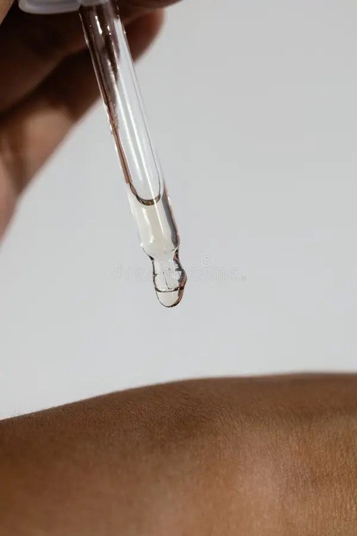

La preparación correcta del lienzo cutáneo
Importancia de la Barrera CutáneaAplicar maquillaje sobre una piel deshidratada altera el resultado final, provocando que la base se absorba en zonas resecas y luzca agrietada. Una rutina de skincare balanceada fortalece la barrera natural, logrando que los productos cosméticos se distribuyan de forma suave, uniforme y con un acabado profesional. El Rol de la Protección SolarEl protector solar es el producto antienvejecimiento más efectivo que existe. Incluso si el maquillaje contiene filtros solares, aplicar una capa previa garantiza una cobertura total contra los rayos ultravioleta, previniendo manchas prematuras y manteniendo la elasticidad natural de las células del rostro. |
 |